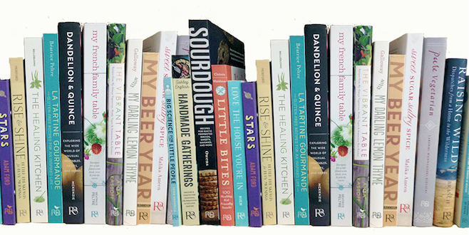

Toast and Jam
Modern Pairings for Rustic Baked Goods and Sweet and Savory Spreads by Sarah Owens Include recipes for buttermilk rye Bread, homemade mayonnaise and capered aioli, as well as herb and citrus salts, all excellent ingredients for a fine tomato sandwich. Learn more...

Roost Bookshelf
New and Forthcoming Titles
-
Full Moon Suppers
February 2017
A beautiful cookbook celebrating the seasons
-
Sweet Sugar, Sultry Spice
October 2016
Learn to use spices when baking sweet and savory treats
-
Eat This Poem
March 2017
Make delicious recipes inspired by your favorite books
-
Sweet Sugar, Sultry Spice
October 2016
Learn to use spices when baking sweet and savory treats

Food

Craft

Family